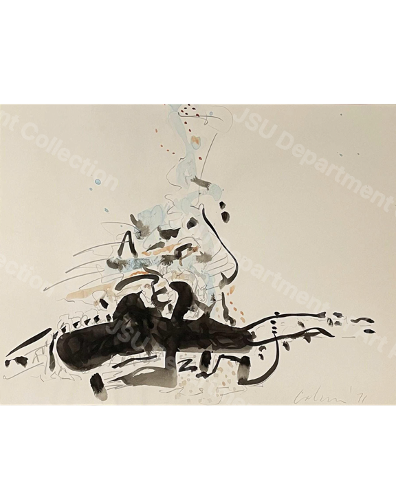

Object Record
Study #17
Floyd Willis Coleman
Description
Object description
This abstract work juxtaposes organic and geometric forms, layering earthy tones with bold black shapes. The textured application of color and composition gives it a sculptural presence, with forms that seem to emerge from the surface. The contrast between soft washes and stark lines creates a compelling visual dynamic.
Rights and Reproduction
Use and permissions
Copyright status: rights restricted
Digital image courtesy of Jackson State University Department of Art Permanent Collection.
For information concerning image use and reproduction, contact JSU.
Cite This Record
Suggested citation
Floyd Willis Coleman, Study #17, c. 1970s, Jackson State University Department of Art Permanent Collection, JSUART-1970-001.